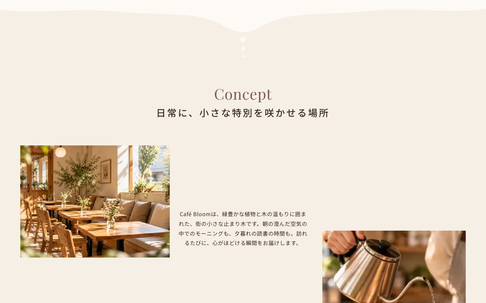
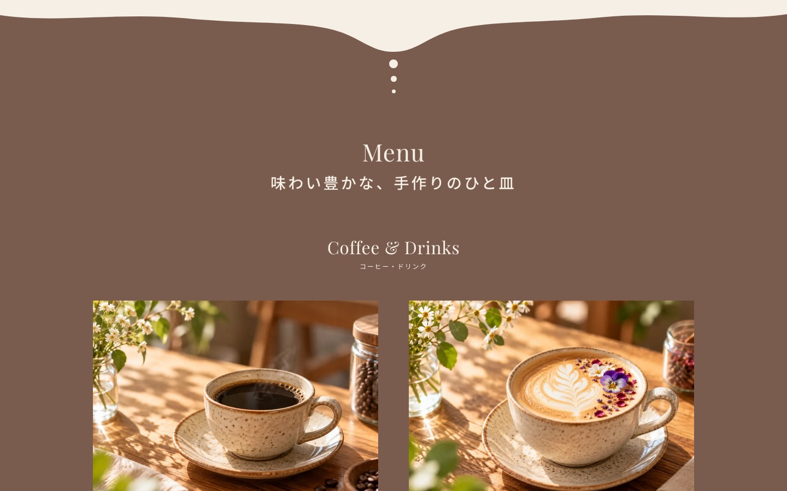

カフェ「Café Bloom」ランディングページ



- 制作区分
- 自主制作（架空案件）
- 制作概要
- 自由が丘のカフェ「Café Bloom」の新規来店客の獲得を想定したランディングページ。
- ターゲット
- 近隣に住む・働く20〜40代の女性。
- 担当範囲
- 要件定義、デザイン、コーディング
- デザインの意図
- やわらかなオフホワイトを基調に、店内やメニューの写真をコラージュのように散りばめ、ナチュラルで温かみのある雰囲気を表現しました。
- コーディング
- PC・スマホ対応（レスポンシブ）。ファーストビューの文字が順番に現れるアニメーション、スマホのハンバーガーメニュー、Googleマップの埋め込みを実装しました。
- 使用ツール
- HTML / CSS / JavaScript